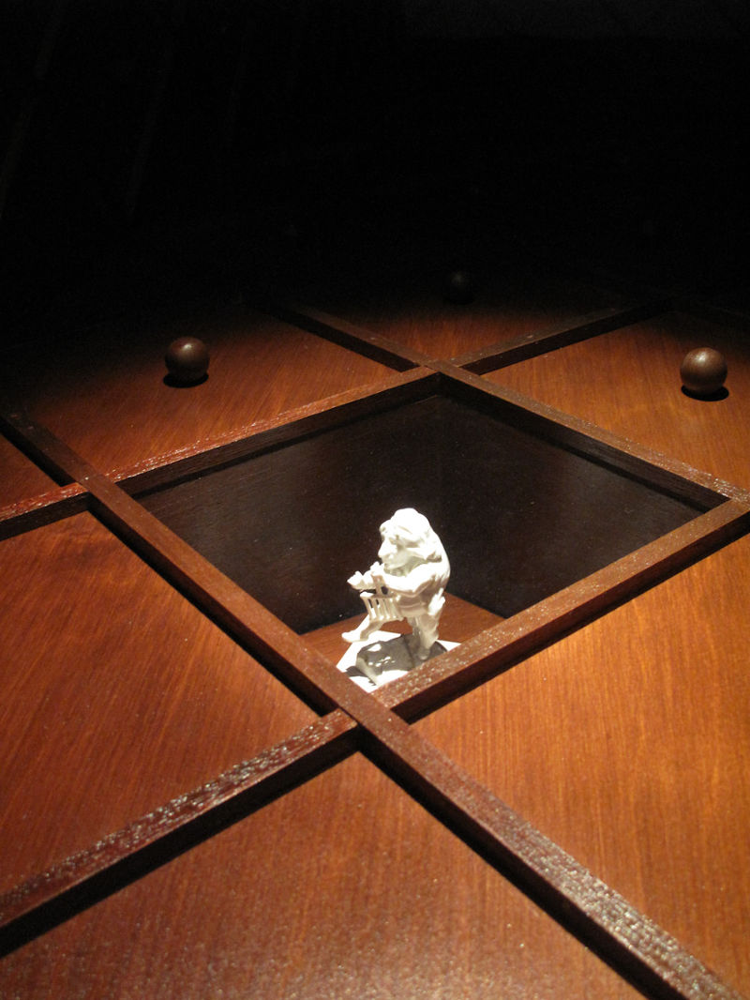

This cabinet was built to fit within an old water-tank cupboard space in Blythe House. It housed two small sculptures and a pair of gloves which had a latticed pattern that was repeated on all sides of the cabinet using some intricate latticed joinery to create a diminishing perspective made on tapering panels. Each diamond space was to suggest a drawer, three which were to be opened leaving a compound box housing the exhibits.
